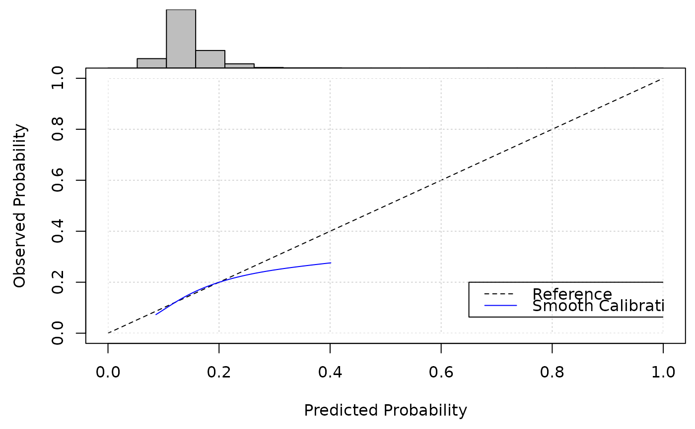

Perform Stacked Regression on Existing Prediction Models
Source:R/pred_stacked_regression.R
pred_stacked_regression.RdThis function takes a set of existing prediction models, and uses the new dataset to combine/aggregate them into a single 'meta-model', as described in Debray et al. 2014.
Usage
pred_stacked_regression(
x,
positivity_constraint = FALSE,
new_data,
binary_outcome = NULL,
survival_time = NULL,
event_indicator = NULL
)Arguments
- x
an object of class "
predinfo" produced by callingpred_input_infocontaining information on at least two existing prediction models.- positivity_constraint
TRUE/FALSE denoting if the weights within the stacked regression model should be constrained to be non-negative (TRUE) or should be allowed to take any value (FALSE). See details
- new_data
data.frame upon which the prediction models should be aggregated
- binary_outcome
Character variable giving the name of the column in
new_datathat represents the observed outcomes. Only relevant formodel_type="logistic"; leave asNULLotherwise.- survival_time
Character variable giving the name of the column in
new_datathat represents the observed survival times. Only relevant formodel_type="survival"; leave asNULLotherwise.- event_indicator
Character variable giving the name of the column in
new_datathat represents the observed survival indicator (1 for event, 0 for censoring). Only relevant formodel_type="survival"; leave asNULLotherwise.
Value
A object of class "predinfo" with subclass"predSR". This is
the same as that detailed in pred_input_info, with the added
element containing the estimates of the meta-model obtained by stacked
regression.
Details
The aim of this function is to take a set of (previously estimated) prediction models that were each originally developed for the same prediction task, and pool/aggregate these into a single prediction model (meta-model) using stacked regression based on new data (data not used to develop any of the existing models). The methodological details can be found in Debray et al. 2014.
Given that the existing models are likely to be highly co-linear (since
they were each developed for the same prediction task), it has been
suggested to impose a positivity constraint on the weights of the stacked
regression model (Debray et al. 2014.). If positivity_constraint is
set to TRUE, then the stacked regression model will be estimated by
optimising the (log-)likelihood using bound constrained optimization
("L-BFGS-B" in stats::optim()).
This is currently only implemented for logistic regression models (i.e., if x$model_type = "logistic"). For survival models, positivity_constraint = FALSE
new_data should be a data.frame, where each row should be an
observation (e.g. patient) and each variable/column should be a predictor
variable. The predictor variables need to include (as a minimum) all of the
predictor variables that are included in the existing prediction model
(i.e., each of the variable names supplied to
pred_input_info, through the model_info parameter,
must match the name of a variables in new_data).
Any factor variables within new_data must be converted to dummy (0/1)
variables before calling this function. dummy_vars can help
with this.
binary_outcome, survival_time and event_indicator are
used to specify the outcome variable(s) within new_data (use
binary_outcome if x$model_type = "logistic", or use
survival_time and event_indicator if x$model_type =
"survival").
References
Debray, T.P., Koffijberg, H., Nieboer, D., Vergouwe, Y., Steyerberg, E.W. and Moons, K.G. (2014), Meta-analysis and aggregation of multiple published prediction models. Statistics in Medicine, 33: 2341-2362
Examples
LogisticModels <- pred_input_info(model_type = "logistic",
model_info = SYNPM$Existing_logistic_models)
SR <- pred_stacked_regression(x = LogisticModels,
new_data = SYNPM$ValidationData,
binary_outcome = "Y")
summary(SR)
#> Information about 1 existing model(s) of type 'logistic'
#>
#> Model Coefficients
#> =================================
#> Intercept Age SexM Smoking_Status Diabetes Creatine
#> 1 -2.675134 0.005345728 0.1589948 0.5233706 0.2543348 0.4554044
#>
#> Model Functional Form
#> =================================
#> Age + SexM + Smoking_Status + Diabetes + Creatine
#one could then validate this as follows (but this should be adjusted for
#in-sample optimism):
pred_validate(SR, new_data = SYNPM$ValidationData, binary_outcome = "Y")

#> Calibration Measures
#> =================================
#> Estimate Std. Err Lower 95% Confidence Interval
#> Calibration-in-the-large 0 0.0204 -0.0400
#> Calibration Slope 1 0.0704 0.8621
#> Upper 95% Confidence Interval
#> Calibration-in-the-large 0.0400
#> Calibration Slope 1.1379
#>
#> Also examine the calibration plot, if produced.
#>
#> Discrimination Measures
#> =================================
#> Estimate Std. Err Lower 95% Confidence Interval
#> AUC 0.5829 0.0058 0.5717
#> Upper 95% Confidence Interval
#> AUC 0.5942
#>
#>
#> Overall Performance Measures
#> =================================
#> Cox-Snell R-squared: 0.0098
#> Nagelkerke R-squared: 0.0175
#> Brier Score: 0.1203
#>
#> Also examine the histogram of predicted risks.
#Survival model example:
TTModels <- pred_input_info(model_type = "survival",
model_info = SYNPM$Existing_TTE_models,
cum_hazard = list(SYNPM$TTE_mod1_baseline,
SYNPM$TTE_mod2_baseline,
SYNPM$TTE_mod3_baseline))
SR <- pred_stacked_regression(x = TTModels,
new_data = SYNPM$ValidationData,
survival_time = "ETime",
event_indicator = "Status")
summary(SR)
#> Information about 1 existing model(s) of type 'survival'
#>
#> Model Coefficients
#> =================================
#> Age SexM Smoking_Status Diabetes Creatine
#> 1 0.03363821 0.2725367 0.5354202 0.1595384 0.3142822
#>
#> Model Functional Form
#> =================================
#> Age + SexM + Smoking_Status + Diabetes + Creatine